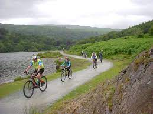
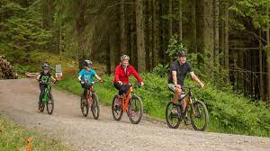
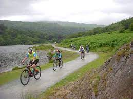
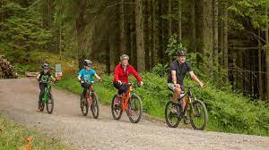
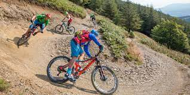
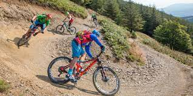
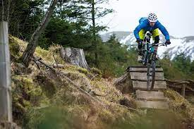
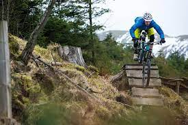

Guide to cycling in the Lake District
The Lake District is a beautiful plce to get out and explore but the roads can get very busy and dangerous to cycle on, particularly in the summer holidays. When the sun is shining there are few places we would like to be than cycling next to a lake or on a trail in the trees. Bbut the problem is, where do yoou go? Well to answer that we have put together some of our favourite cycle rides for all abilities to suite everyone.
Beginner Cycle Routes

 



Intermediate Cycle Routes
 

Advanced Cycle Routes
 
